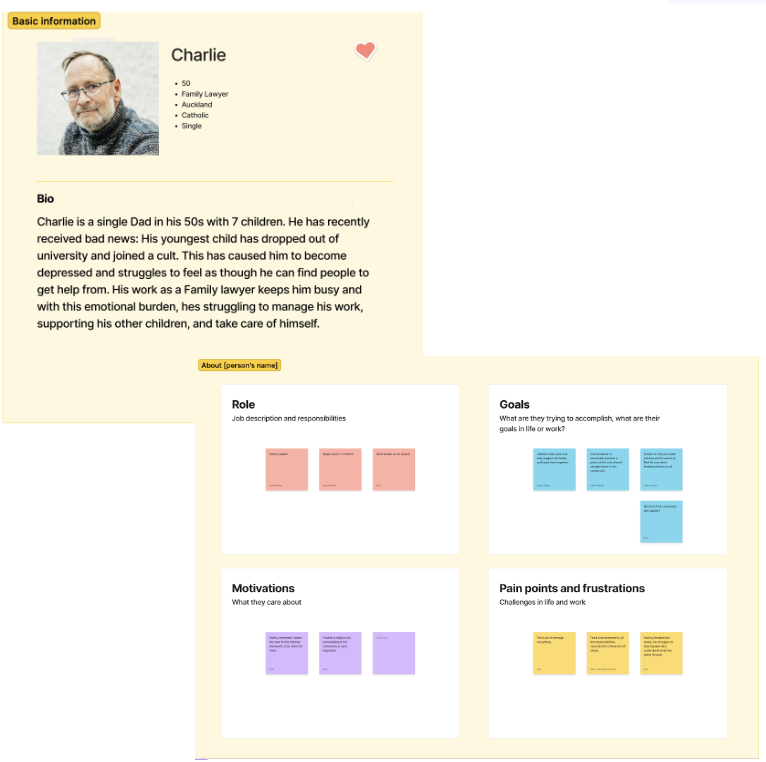

(note: blog looks best on a laptop sized screen) Today’s class was an introduction to the IXXN221 course. I learned about how it has changed over the years (switched from a coding-focused
course to a design-focused one), and looked at previous assignments to understand what is expected. I initially did have concerns about the course
being entirely online, but after this lecture, I feel more certain and comfortable about the structure and support I will be able to receive
throughout. I believe that the course introduction and seeing previous students’ work has motivated and inspired me to do my best throughout
this course. This is important for me as a designer, as I should clearly understand the task and be able to carry it out at the highest standard I
can achieve.
We also made name cards to share with the class. We did these on Figma, which is something I have never used before. This activity was a great
opportunity to quickly experiment and trial with Figma in order to become more comfortable using it for future assignments. There was a reasonable
amount of customisability which made making the name tags fun! From this course, I am hoping to learn more about web design and the principles
that shape it. I believe having an understanding of these is crucial to succeed in web design. I am also hoping to learn more about different
softwares and platforms, such as Figma, and become confident using them.
I found this section really interesting as my knowledge about the history of web design was extremely limited. I believe it is important as a designer to be well-informed about the history of web design, especially since I will be designing a website in this course. We were given a breakdown of significant events that happened in certain years, such as the birth of the World Wide Web in 1990 and the creation of GeoCities in 1994. Being able to access and explore these websites, as well as seeing how they developed over the years with the introduction of CSS, really fascinated me. I noticed the layouts of the earlier websites were minimalistic and basic, which I believe is still important in web design today in terms of usability, accessibility, and navigation. As a designer, it inspired me to appreciate the progress and development of web design, as well as principles such as simplicity. This has influenced me to consider these when it comes to designing my website.
During this class we were given a deeper insight into what would be required for assignment one, specifically for creating personas. I understood that as a designer, it is important to fully understand the user and their needs/motivations in order to help them achieve their goals. This will also help a designer simultaneously achieve their own goals. Personas can be applied in web design to enhance user experience, accessibility, user journeys, and much more. To enhance our understanding, we completed a workshop that involved working as a group to create and structure a persona. We were introduced to the website ‘cards for humanity’ which we utilised for inspiration and to help us get started. This practice was beneficial for me as a designer as it worked to help reinforce my understanding, and has given me confidence for creating a persona on my own.
The prerecorded coding lecture gave a basic introduction to coding in HTML. This involved setting up the code and learning about the different headings, inserting paragraphs, and images. I have recently completed a course (INFO101) that went through the basics of coding a website using HTML and CSS, so I was familiar with the content being introduced and have reasonable experience using Visual Studio Code for coding. Despite this, I found it quite helpful as a refresher as it has been some time since I last used it. Knowing the basics of HTML is critical in web design as it is the foundation for web pages.
In this lecture we were taught about quantitative and qualitative goals, as well as the SMART goal framework. I was also made aware of how some of the goals between a user and a designer can overlap, and how Venn Diagrams are used to best visualise this. This is important for web design as it allows for shared understanding between a user and the designer, a user-centred design, and improved user experience. Goals should be considered in web design as it is useless to create a website that is the opposite of what the user needs. In today’s workshop we used a persona created from last weeks workshop to come up with goals for both the user and designer, as well as some goals they may share. Feedback we received included diving deeper into what we meant by certain words such as ‘easy’ and ‘straightforward’, as well as thinking about what would make our proposed website idea different to others. As a designer, getting feedback is important, and I will consider this when it comes to assignment.
During this lecture I learned about the history of web design from 1998-2008, which built on content from last week’s lecture. Similar to last week’s entry, I found this section interesting as my knowledge of web design is pretty small. Seeing the development from lists of words and limited colour in the 1990’s, to websites with a wide range of customisation as the years went by was inspiring to see. The idea of skeuomorphism was something I hadn’t taken too much notice of before, but it really fascinated me. Learning more about the history of web design and seeing the events and pages of websites influenced me as a designer, as some of these principles, like simplicity, should continue to be applied in web design.
This prerecorded coding lecture went over using anchor tags to hyperlink pages through texts and images, as well as using lists, both ordered and unordered. This is built on the knowledge from last week’s lecture. Again, I had prior knowledge of the anchor tags but it was interesting to learn about the ordered and unordered lists and how the unordered has bullet points, while the ordered has numbers to show importance or a specific order of the content. Learning the basics of HTML is crucial for web design, so I will be sure to consider implementing this code in my projects.
In today’s lecture we wrapped up the final part of the history of web design, looking at the years 2009 up until the present. Again, it has been interesting to see how websites and interactions have evolved since the creation of the World Wide Web. Throughout this session we were introduced to websites that would be helpful throughout this course, such as Figma for developing website designs and Google Fonts to use in coding. In terms of web design, these are resources that can be used to customise and improve a website, and to help plan and design for optimisation. Being able to see the development of websites up until the present day has inspired me, and has me wanting to incorporate and use some of the principles/resources discovered.
This week we were introduced to customer journey maps and user flows. The purpose of the customer journey map is to show the stages, feelings, and experiences the customer will go through before, during, and after interacting with the website. It is important to understand how the user may interact with the website in order to further improve the user experience and ensure it fits their requirements. The user flow shows the actions/interactions a user takes when interacting with the website in order to achieve their goals. These can be split into 3 categories; displays, decisions, and actions. This is important for web design as it shows how the user will be interacting with the product and any improvements that need to be made. My knowledge will allow me to apply this to project 1, and be able to dive deeper and explore the different stages the user will undertake when interacting with my website.
This week we were introduced to CSS, which allows HTML elements to be customised. This includes changing background colours, the size and colour of fonts, as well as the height spacing between words, in order to make a website more visually pleasing and easy to navigate/read (if done correctly). It also allows you to add padding, borders, and margins. This will be important when it comes to styling and designing the website/blog during the coding stage, to ensure elements line up and work together. Adding colour will help create personality, and being able to adjust the size of images and text will help with visual hierarchy, which is important in web design.
Today’s lecture was used to review the expected structure of assignment 1, which is due next week. This was also the last opportunity for project support. We were split into breakout rooms in order to receive feedback. At this stage, I had only partially completed my persona and venn diagram, so I found this was a good time to get feedback before moving onto the user flow and journey map. From the persona and venn diagram, I had the idea of a planning website that would allow a user to organise their tasks and activities. I liked this idea, but I was struggling to picture how to create the user journey map and flow diagrams as I was unsure on how I would execute this type of website when it came to actually designing it. Therefore, getting feedback was helpful as I was given a suggestion to make my website one that provides guides and resources to tackle planning, rather than being an actual planner website. This would make the projects achievable, and help me when creating my user flow and journey map.
This prerecorded lecture went over divs and flexboxes. I have had experience with using divs and flexboxes before, but I never fully understood how they worked. This lecture helped me understand how divs can allow text, images, and other elements can be arranged and allows for structure in a website. Flexboxes can change how elements are displayed on a page, such as spacing, aligning, and ordering. There are many different options when it comes to flexboxes, which will be beneficial when it comes to coding my website/blog. So far with coding, I have been feeling somewhat confident. Because I have prior knowledge of the basics, it is making it slightly easier to understand.
During this lecture we were given an introduction to colours. I learned more about the different types (RGB, CMYK, pantone), as well as the different types of colour schemes (analogous, complementary etc). I was introduced to different websites that can help build colour schemes, as well as the different meanings of colours. This is important for web design as if I am creating a website that is meant to be helping with reducing stress, I want to be incorporating colours that represent and resemble this (such as blue, white etc). I was also introduced to accessibility websites that test the colour scheme to ensure eligibility and inclusivity, as well as rules such as the 60-30-10 rule. This made me understand the importance of colour in a website and is something I need to heavily consider throughout the website design process.
This lecture also covered typography, which I found informative as I don’t have much experience or knowledge on this topic. It gave an introduction to the different types of typeface (serif, sans serif) as well as their identities, such as whether they are used for a classic or dramatic purpose. Google fonts was reintroduced, which would be a helpful resource as these fonts can be applied and used in code. I learned about the different types of font sizes and the specificity and importance of scaling text. I never realised there were specific resources and ways that provide a guide of what size each heading should be, to ensure visual hierarchy and consistency. Leading and paragraph width were also something I have never really considered, and will be important when it comes to web design, as it will ensure text is easy to read and understand, creating a positive user experience. The workshop included critiquing a website design, which allowed us to use our knowledge of colour and typography to analyse a website and look for inconsistencies and improvements.
Before this lecture, I had never heard of GitHub. My understanding is that GitHub desktop allows for interaction with GitHub. It can neatly list out projects and also allows for collaboration. It lets a user to keep track of their files and see any updates made to track progress, and can hold work, even if it is removed from a computer. If a mistake is made, it can be changed back to a previous version which will be a beneficial feature when it comes to trialling different things with code. I did attempt to download Github desktop and set it up, and although I did struggle at the beginning, I believe I will gain more knowledge and become more confident as I use it more. This introduction was a helpful guide to refer back to when it comes to the coding part of this course.